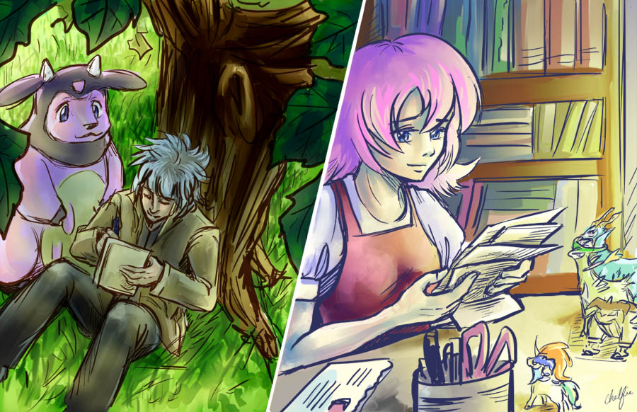
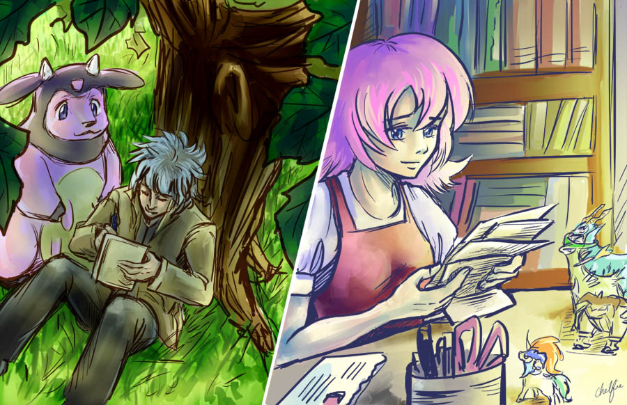

THE SILVER LEAGUE CANON
With the Comic unfortunately being a lower priority nowadays and with more and more animations being produced that expand the SL Lore, it felt like the best route to go would be to turn this page into a space that can archive and categorize all the adventures that take place within the Ginune Region or the SL lore as a whole!
Anyone and Everyone who participates in The Silver League community has just as much of an equal shot at contributing to the SL Canon, if you got an idea, a character or a story you wanna share, then get involved and you to can have a bio and write up of your share in this ever expanding universe of what is extensively glorified fanfiction!
~THE STORY~
PREMISE:
The Initial Story of The Silver League is essentially a prequel to the present day League that upholds a stern stance against the use of Modifiers, devices that allow a user to change a Pokemon's various attributes on a whim. The story can be broken up into 4 major arcs/seasons which each have their own unique synopsis. Present day Silver League doesn't have a focused "plot" since it is just our everyday lives in the literal present but many adventures can be expanded upon in a style similar to Pokemon Chronicles.
SEASON 1:
After saving his Sister from being Kidnapped by Team Reaction and witnessing a baby Lugia rise from Lake Soverence, Silver is motivated to pursue a journey as a Pokemon Trainer. On his journey he encounters heroes, rivals, friends and villains as well as what it means to be a Trainer. His perception of the world is quickly challenged but is good nature makes it impossible for him to ignore the call of someone in need. So Silver goes out of his way to save a Shiny Vulpix that Team Reaction was using to develop a new model of Modifiers. After Silver convinces the Vulpix to join him on his journey, he saves and evolves it into the Shiny Ninetales that would become the face of The Silver League Movement. Formed by Silver, Tenks, Nyeem, Mr. DS, Geno & Gamer, they all set off on their own quests to get stronger and find others willing to join their cause so that they can form another League in this region and challenge Team Reaction's monopoly over the Ginune Region!
SEASON 2:
With The Silver League moment now formed, everyone goes about their own methods to get this "League" started. For Silver, since he was told most Gym Leaders were already against Modifiers, he decides he'll travel the region and challenge the Gyms, so that he can both get stronger and convince them to join The Silver League's cause! Silver and his Pokemon all learn a lot about themselves and each other on their travels, discovering how Gyms are made and how one even becomes a Gym Leader. Pearl also proves herself ready to become a Pokemon Trainer and goes on her own journey too! Silver meets many new friends who he'll go on to form close bonds with, greatly expanding their cause. Team Reaction begins to take notice of this Movement too and begins to take measures to try and put a stop to it!
Silver and his friends also take part in The Reaction Festival, a big tournament held every year in Ambercrest City that ends up making The Silver League Movement a publicly known thing. This all cultivates in Shade, the former Champion and Ambercrest City Gym Leader accepting Silver's challenge to see once and for all if The Silver League is truly a cause worth investing his time into. Its a battle that showcases what it takes to be a Champion as well as challenge what it means to be a Gym Leader!
SEASON 3:
The Silver League Movement is now public knowledge and its garnered a lot of attention. Reaction's efforts get more aggressive but Silver's quest continues as he travels across the region so that he can gather 8 badges and challenge the Reaction League head on! Silver finds himself battling his hero, GM the Grass-Type Gym Leader. Followed by Blight, a man of science and the Poison-Type Gym Leader who's more then happy to join...but it also intrigue by Silver's actions in conjunction with a past he was not familiar with.
From there, Silver's past leads him towards the Feathervale Highlands where he's reunited with friends he made in the Reaction Festival Tournament. But its there he discovered corruption that's taken the Fangspire Dragon Clan hostage, so with all this corruption, Silver will be forced to take on a Gym Leader who's fully embraced Modifiers as the future. Without a free pass at getting this Gym Leader to join, can the skill he's gained over his journey be enough to finally defeat a Trainer who uses Modified Pokemon? He'll need to if he wishes to truly overthrow The Reaction League!
SEASON 4:
With 7 badges, Silver has almost enough to challenge The Reaction League! But for his next badge he heads further north and eventually encounters a friend of sorts he met near the start of his journey, Kamui. It's a short leaved reunion though as Silver quickly needs to aid Kamui in dealing with a Darkrai that's left everyone in Cresenridge City living in a never ending nightmare! After taming the Darkrai's angered art, it agrees to join Kamui, who then accepts Silver's Gym Challenge. However Kamui begins to reveal his past, where he has seen witness to many Pokemon, including his own Dark Omen who've been on abused and hurt by humans and Kamui vowing to protect them.
Kamui proves too strong for Silver and defeats Silver. However despite the loss, Kamui is more then happy to join The Silver League, but only if The Reaction League is toppled, as he's already made a promise to a friend many years ago and he never backs down on his word, no matter what. This still leaves Silver without a required 8th badge, but instead of just rematching Kamui, Silver decides he'll just go elsewhere and battle another Gym, try to convince them to join as well. Kamui suggests the Ice-Type gym in the Terrafrost Mountains and Silver takes him up on this suggestion.
However...this proves to be arguably a trap, as it turns out THIS is where Reaction's primary Headquarters is located and the Ice-Type Gym is run by none other then Par, the leader of Team Reaction! Silver faces yet another brutal defeat, however this time he isn't planning on running to another Gym. He needs to be able to beat Par to truly topple The Reaction League so with the help of his many friends, Silver finds the strength and skill needed to earn his 8th badge.
But after that... comes The Reaction League, a gauntlet of their own appointed Elite Four and their Champion, Par. The Elite Four turn out to be the Reaction's own admins, with plot twists and revelations that are set to shake Silver to his very core, but with the 10 Pokemon he's allowed to bring with him into this final set of battles, can Silver overcome the physical and emotional challenge? Can he save Par from the man he's become? Everything they've all worked so far for comes down to this!
 


Season 1 Chapters:
Read the Season 1 Comic HERE
Chapter 0: The Silver League Legacy
Chapter 1: Eve of a New Legend
Chapter 2: I Want to be a Pokemon Trainer!
Chapter 3: The Bond Between Trainers & Pokmon, GM's Guidance!
Chapter 4: Migration Turmoil! Feebas Vs. King Magikarp!
Chapter 5: A Trainer's Purpose - The Wondering Shadow, Kamui!
Chapter 6: Rivalry! The Legend Hunter Shugo Appears!
Chapter 7: Modifiers! The Ginune League's Corruption!
Chapter 8: The 1st Gym! Silver Vs The Quicksand Trickster!
Chapter 9: Training Under a Champion; Shade's Brute Honesty!
Chapter 10: Rain on the Reaction Headquarters!
Chapter 11: Mr. DS & Geno; Engineers of a New Hope!
Chapter 12: Keeping True to a Promise; Silver's Determination!
Chapter 13: The Shining Symbol; The Silver League Movement!